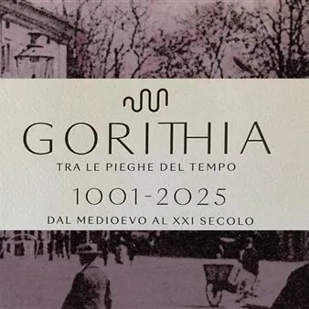

da lun 24 feb a gio 31 dic
Gorithia - Tra le pieghe del tempo – 1001-2025 – Dal Medioevo al XXI secolo
"Gorithia" è un progetto a dir poco innovativo nel modo di raccontare la più millenaria storia di Gorizia. Per quanto la città probabilmente esistesse già prima, la narrazione parte dall'anno 1001, data a cui risale il primo documento che la cita, arrivato a noi. La mostra è un…
 Indicazioni
Indicazioni
- Costi e prenotazioni
- Costo non indicato · Prenotazione non indicata
- Programma
- Programma da verificare. Apri la fonte ufficiale per orari e possibili aggiornamenti.
- In caso di maltempo
- Nessuna indicazione specifica pubblicata.
- Note
- Acquisito automaticamente dalla fonte.
L’EVENTO
Descrizione completa
"Gorithia" è un progetto a dir poco innovativo nel modo di raccontare la più millenaria storia di Gorizia. Per quanto la città probabilmente esistesse già prima, la narrazione parte dall'anno 1001, data a cui risale il primo documento che la cita, arrivato a noi. La mostra è un importante operazione culturale capace di far comprendere l'importanza del territorio: uno snodo strategico posizionato lungo le vie che collegano il Nord e il Sud dell'Europa, ma anche l'Est e l'Ovest.
L'esposizione scorre dunque dall'anno 1001 fino ai giorni nostri ed è una narrazione che si sviluppa attraverso schermi touch, videomapping, ricostruzioni in realtà virtuale e opere di elevata valenza storica, capaci di unire tutti i potenziali pubblici: dai più giovani attratti dalla tecnologia "a servizio" della storia, agli appassionati d'arte che avranno la possibilità di ammirare opere di grande pregio. A partire dal nome, perché "Gorithia” è una parola che non esiste, ispirata dalla popolazione composta da etnie che parlavano lingue diverse, per cui Gorizia è stata chiamata contemporaneamente in modi diversi.
che a rotazione raccontano la storia di Gorizia, "esponendo" di giorno in giorno un'epoca diversa: Medioevo, Età Moderna, Lungo Ottocento e il Novecento fino all'età contemporanea.
All'allestimento digitale si affianca una sezione tradizionale con opere d'arte e oggetti di grande pregio a rappresentare le varie epoche dal Medioevo al Novecento, esposte con cadenza trimestrale.
La narrazione esce anche dallo Smart Space e si amplia lungo le strade di Gorizia, in cinque percorsi anche transfrontalieri da fruire passeggiando in città muniti di una app per sistemi operativi iOS e Android, da scaricare gratuitamente sul proprio smartphone prima di iniziare il viaggio nella storia.
IL PROGRAMMA
Programma e orari
Appuntamenti raccolti dalle fonti elencate. Dove manca un orario, non è ancora disponibile in questa scheda.
Programma pubblicato
- ore 16.00 e ore 17.30
- 16.00 e ore 17.30
- ore 10.00 e 11.30: Medioevo
- ore 16.00 e 17.30: Età Moderna
- ore 10.00 e 11.30: Lungo Ottocento
- ore 16.00 e 17.30: Novecento, fino all'età contemporanea
INFORMAZIONI UTILI
Prima di partire
- Controllare la fonte prima di partire.
ORGANIZZAZIONE